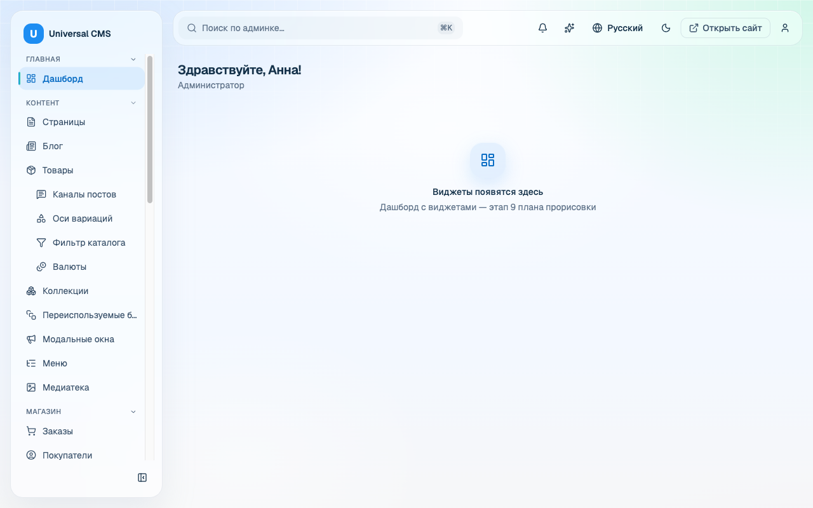
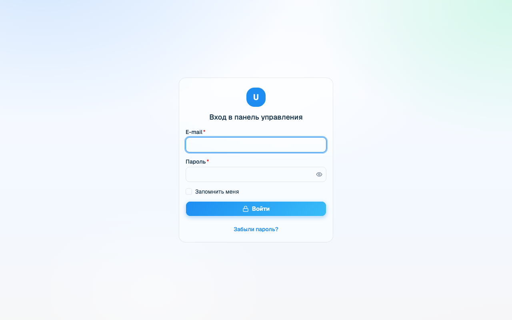
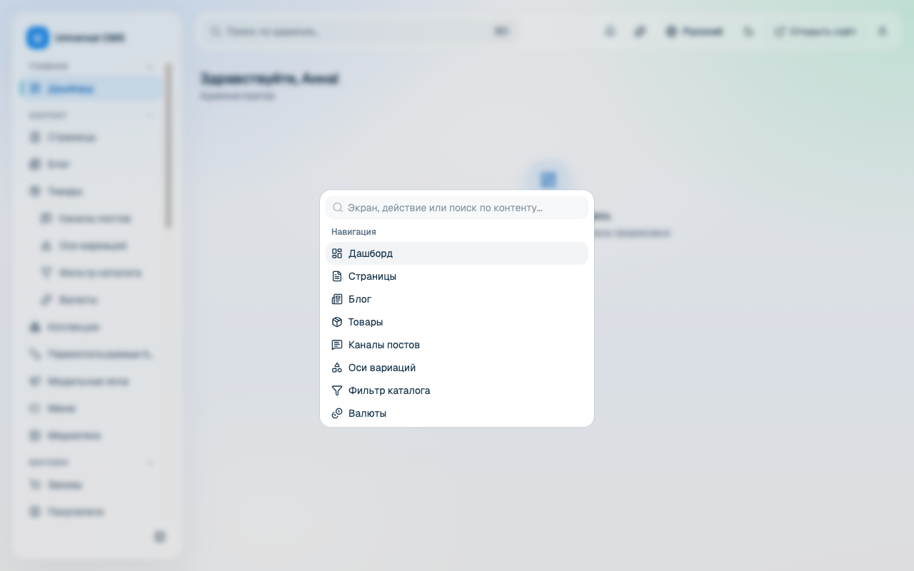

Air Glass UI — Admin Dashboard Template
A premium, production-grade admin dashboard UI template built with React 19, TypeScript, Vite and Tailwind CSS v4. It ships with a cohesive “Light Air Glass” design system, 60+ accessible components, a broad catalog of ready-made screens, full theming with dark mode, RTL-awareness, and an in-repo mock API so the whole template runs and demos with zero backend.
Thank you for purchasing Air Glass UI. This document walks you through
everything you need to run, customize and extend the template — from a first
npm install to adding your own screens and swapping the mock data layer for a
real backend. Use the sidebar to jump to any topic; the same content prints as a single
linear document (see Save as PDF).



What's included
Full source code
React 19 + TypeScript sources under src/, built with Vite 8.
Design system
“Light Air Glass” tokens centralized in src/index.css — light & dark.
60+ UI components
Accessible primitives in src/components/ui (shadcn/ui + Radix + Base UI).
Ready-made screens
Auth, dashboard, users & roles, e-commerce, analytics, inbox, kanban, and more.
Mock API
A typed client + fixtures so every screen runs and demos without a server.
This documentation
Self-contained HTML you can open offline, plus a print-to-PDF export.
Technology stack
| Area | Technology |
|---|---|
| Language | TypeScript (strict, target ES2023) |
| UI runtime | React 19 |
| Build tool | Vite 8 (@vitejs/plugin-react) |
| Styling | Tailwind CSS v4 (@tailwindcss/vite), tw-animate-css, Geist Variable font |
| Component primitives | shadcn/ui, Radix UI, Base UI (@base-ui/react) |
| Routing | react-router v8 (browser router, lazy routes) |
| Data layer | TanStack Query (mock-backed), TanStack Table |
| Forms & validation | react-hook-form + Zod (@hookform/resolvers) |
| Charts | Recharts |
| Editors | TipTap (rich text), CodeMirror (HTML) |
| Drag & drop | dnd-kit |
| Tooling | oxlint (lint), Prettier (format), Vitest + Testing Library + jsdom (tests) |
| Backend | None — in-repo mock API only (no database) |
Browser support
Air Glass UI targets modern evergreen browsers — the latest two versions of
Chrome, Edge, Firefox and Safari. The glass surfaces use
backdrop-filter; where a browser does not support it the layout degrades
gracefully to solid surfaces. There is no Internet Explorer support.
themeforest-prep notes describe the packaging and licensing bar in detail.
Getting Started
The template is a standard Vite single-page application. If you have built a React app before, everything here will be familiar.
Prerequisites
- Node.js 20.19+ or 22.12+ (an active LTS release is recommended). Vite 8 requires one of these minimum versions — older Node releases are not supported.
-
npm (bundled with Node). The commands below use npm; the equivalent
pnpmoryarncommands work too if you prefer, but the lockfile in this package ispackage-lock.json(npm).
Install & run
From the project root, install dependencies and start the dev server:
npm install # install dependencies
npm run dev # start the Vite dev server with hot-module reloading
The dev server prints a local URL (typically http://localhost:5173/admin-assets/).
Open it and you are running the full template on mock data — no backend required.
/admin-assets/?
The app is configured with a Vite base of /admin-assets/ (see
vite.config.ts) because it was designed to be mounted under a sub-path. Change
base to '/' if you want to serve it from the domain root. The router reads
this value from import.meta.env.BASE_URL, so routing follows the base automatically.
Available scripts
All scripts are defined in package.json:
| Command | What it does |
|---|---|
npm run dev | Start the Vite dev server with HMR. |
npm run build | Type-check then build for production (tsc -b && vite build). Output goes to dist/. |
npm run preview | Serve the production build locally to verify it. |
npm run lint | Lint the codebase with oxlint. |
npm run format | Format sources with Prettier (src/**/*.{ts,tsx,css}). |
npm run format:check | Check formatting without writing changes. |
npm run test | Run the test suite once with Vitest. |
Building for production
npm run build # type-checks, then emits static assets into dist/
npm run preview # locally preview the dist/ build
The contents of dist/ are plain static files — HTML, JS and CSS. Deploy them to any
static host (Netlify, Vercel, S3/CloudFront, Nginx, GitHub Pages, …). Because the app is an
SPA, configure your host to rewrite unknown paths to index.html so client-side routing
works on deep links.
Project structure
The source tree follows a feature-sliced layout:
src/
├── app/ App shell, router and the single navigation map
│ ├── app-shell.tsx Authenticated layout: sidebar, header, ⌘K palette
│ ├── router.tsx react-router config; feature screens are lazy-loaded
│ └── nav.ts ONE navigation map (sidebar + command palette)
├── features/ Screen-level code, one folder per domain
│ ├── auth/ login · forgot · reset · MFA enroll · guest layout
│ ├── dashboard/ customizable widget dashboard
│ ├── users/ users list · editor · roles/RBAC · profile
│ ├── settings/ settings + appearance
│ ├── shop/ orders, products, customers, payments, invoices, …
│ ├── analytics/ inbox/ kanban/ media/ pricing/ ai/ help/ …
│ ├── ui-kit/ component showcase
│ └── placeholder/ fallback screen for un-built routes
├── components/
│ ├── ui/ 60+ reusable primitives (shadcn/ui + Radix + Base UI)
│ └── *.tsx composed app widgets (data-table, page-header, …)
├── lib/ Cross-cutting helpers (auth, i18n, query, permissions, …)
├── hooks/ Shared React hooks
├── api/ API client + types
│ └── mock/ in-memory fixtures (zero-backend demo)
├── locales/ 8 locale dictionaries (en, de, es, fr, it, pl, ru, uk)
├── assets/ Static assets
├── index.css ALL visual identity: shadcn vars + --glass-* tokens
└── main.tsx App entry: providers + RouterProviderRoot configuration files worth knowing:
| File | Purpose |
|---|---|
vite.config.ts | Vite config: React + Tailwind plugins, base, the @ path alias. |
tsconfig.json / tsconfig.app.json / tsconfig.node.json | TypeScript project references (strict mode). |
components.json | shadcn/ui registry config (points its CSS at src/index.css). |
vitest.config.ts | Vitest test runner config (jsdom environment). |
index.html | The Vite HTML entry that mounts main.tsx. |
The @/* path alias
Every import that starts with @/ resolves to src/. This is configured in two
places that must stay in sync: resolve.alias in vite.config.ts (for the
bundler) and compilerOptions.paths in tsconfig.app.json (for TypeScript).
// Instead of brittle relative paths…
import { Button } from '../../../components/ui/button'
// …use the alias:
import { Button } from '@/components/ui/button'Theming & Design Tokens
Air Glass UI has a single source of visual truth:
src/index.css. Every color, radius, blur, gradient, shadow and glass surface is
defined there as a CSS custom property (design token). Screens and components
consume tokens — they never hard-code their own colors, blur or mesh. This is an
enforced project rule, and it is what lets you rebrand the entire template by editing one file.
blur() value, or a gradient inside a
component, stop — add or reuse a token in src/index.css instead. Keeping tokens
centralized is what preserves the “Light Air Glass” consistency across light and dark themes.
How the tokens are organized
src/index.css is layered top to bottom:
-
Imports — Tailwind v4,
tw-animate-css, the shadcn Tailwind preset, and the Geist Variable font. -
@theme inline— maps Tailwind color utilities (bg-primary,text-muted-foreground, …) to the CSS variables, and defines the radius scale. -
:root— the light palette: the shadcn variables (--background,--foreground,--primary,--card,--border,--radius, chart colors, sidebar colors) and the--glass-*layer (glass backgrounds, blur radii, saturation, borders, highlights, shadows), plus motion, glow and status tokens. -
.dark— the dark overrides: the same token names re-declared on a dark base, so dark mode is a set of value swaps, not a separate stylesheet.
The shadcn palette & the glass layer
Standard shadcn tokens drive component color; the bespoke --glass-* tokens drive the
frosted-glass surfaces that give the template its identity. A representative slice of the
light theme:
:root {
/* shadcn palette (light) */
--background: #f6faff;
--foreground: #15324a;
--primary: #176dbd; /* accent — buttons, links, rings, nav marker */
--card: var(--glass-bg-card);
--border: rgba(148, 163, 184, 0.20);
--radius: 12px;
/* charts */
--chart-1: #1d8df2; --chart-2: #34d399; /* … */
/* --glass-* layer (consumed only by framework surfaces) */
--glass-bg-card: rgba(255, 255, 255, 0.42);
--glass-bg-panel: rgba(255, 255, 255, 0.50);
--glass-blur-card: 28px;
--glass-saturate: 160%;
--glass-border: rgba(148, 163, 184, 0.26);
--glass-shadow: 0 22px 48px rgba(148, 163, 184, 0.16);
}
.dark {
/* same token names, dark values */
--background: #0b1220;
--foreground: #e2ecf7;
--primary: #176dbd;
/* …glass recipe re-applied on a dark base… */
}
Note how --card points at --glass-bg-card: the accent and neutral families
derive from a small number of base tokens, so changing one value cascades everywhere it
is referenced.
How to rebrand
To restyle the whole template, change a handful of token values in :root (and the
matching ones in .dark). The most impactful is --primary, the accent that flows
into buttons, links, focus rings, the active-nav marker and select highlights:
/* src/index.css — before */
:root { --primary: #176dbd; } /* blue */
.dark { --primary: #176dbd; }
/* after — a violet brand */
:root { --primary: #7c3aed; } /* buttons, links, rings, nav marker all follow */
.dark { --primary: #8b5cf6; } /* a slightly lighter accent reads better on dark */
Save the file and the dev server hot-reloads — every accented surface across every screen
updates at once, in both themes, with no per-component edits. To go further, adjust the
--glass-bg-* opacity for more or less translucency, the --glass-blur-* radii for a
softer or crisper frost, or the --radius* scale for sharper or rounder geometry.
:root should have a considered counterpart in .dark.
Also check contrast: several tokens carry a note that they were tuned to meet WCAG AA — keep
text/background pairs at 4.5:1 or better when you re-color.
Where Tailwind utilities come from
Tailwind CSS v4 is wired in through the @tailwindcss/vite plugin (see
vite.config.ts) and the @import "tailwindcss"; at the top of
src/index.css — there is no separate tailwind.config.js. Utilities such as
bg-primary or rounded-lg resolve to your tokens because of the
@theme inline block that maps --color-* and --radius-* to the CSS
variables. Animations come from tw-animate-css; the UI font is
Geist Variable (@fontsource-variable/geist).
Adding a New Screen
Screens follow a consistent, feature-sliced recipe. Adding one touches six places; do them all and your screen appears in the sidebar and the ⌘K palette, is code-split, permission-gated, localized in all languages, and backed by mock data — exactly like the built-in screens.
-
Create the feature file under
src/features/<domain>/. Export a named React component (PascalCase) and reuse the shared page/layout components (PageHeader,ListLayout,DataTable,Card, …) so it matches the rest of the app. Consume design tokens — never hard-code colors. -
Register a single navigation entry in
src/app/nav.ts. This one map is consumed by both the sidebar and the ⌘K command palette — add the entry once and it shows up in both, with no drift. Give it apermif the screen should be gated. -
Add a lazy route in
src/app/router.tsx. Feature screens load lazily (code-splitting) so the login screen stays tiny; wrap it in<RequirePermission>if it needs a permission. -
Add i18n keys to all 8 locale files under
src/locales/(see the Internationalization guide and thei18n-merge.mjshelper). -
Add mock data under
src/api/mock/and (optionally) an endpoint on theapiobject so the screen has something to render with zero backend (see Mock API). -
Gate with a permission where appropriate — declare it in the nav entry and in
the route, and make sure the mock
meuser carries that permission so you can see the screen.
air-glass-screen generator skill that scaffolds all six touch-points
for you. The steps below show what it produces so you can also do it by hand.
Worked example — a minimal “Announcements” list screen
1. The feature component
// src/features/announcements/announcements-page.tsx
import { useQuery } from '@tanstack/react-query'
import { PageHeader } from '@/components/page-header'
import { Card } from '@/components/ui/card'
import { api } from '@/api'
import { t } from '@/lib/i18n'
export function AnnouncementsPage() {
const { data = [] } = useQuery({
queryKey: ['announcements'],
queryFn: () => api.announcements.list(),
})
return (
<div>
<PageHeader title={t('nav.announcements')} />
<div className="grid gap-3">
{data.map((a) => (
<Card key={a.id} className="p-4">
<h3 className="font-medium">{a.title}</h3>
<p className="text-muted-foreground text-sm">{a.body}</p>
</Card>
))}
</div>
</div>
)
}2. One navigation entry (src/app/nav.ts)
import { Megaphone } from 'lucide-react'
// …inside the appropriate NavGroup's `items` array:
{
to: '/announcements',
label: t('nav.announcements'),
icon: Megaphone,
perm: 'announcements.view', // omit `perm` for an ungated screen
},3. A lazy route (src/app/router.tsx)
const announcementsPage = () =>
lazyPage(() =>
import('@/features/announcements/announcements-page').then((m) => ({
default: m.AnnouncementsPage,
})),
)
// …inside the authenticated route tree's `children`:
{
path: '/announcements',
element: (
<RequirePermission perm="announcements.view">
{announcementsPage()}
</RequirePermission>
),
},4. i18n keys in every locale
// Author them once in a payload and merge into all 8 dictionaries:
// node scripts/i18n-merge.mjs payload.json
// payload.json → { "en": { "nav.announcements": "Announcements" },
// "ru": { "nav.announcements": "Объявления" }, … }5. Mock data (src/api/mock/) + endpoint
// src/api/mock/announcements.ts
export const announcements = [
{ id: 1, title: 'Welcome', body: 'The template is running on mock data.' },
]
// Register it in the mock router (src/api/mock/index.ts) for GET /announcements,
// and add the typed endpoint on the `api` object in src/api/index.ts:
// announcements: { list: () => apiFetch<Announcement[]>('/announcements') }src/components/ —
PageHeader, ListLayout, SettingsLayout, DataTable,
SaveBar, EmptyState, PaginationBar — rather than laying out pages
from scratch. The Screen Reference shows how the built-in screens
are assembled.
Mock API & Swapping in a Real Backend
Air Glass UI runs end-to-end with no server. A small data layer under
src/api/ sits between the screens and the network, and in development it transparently
serves responses from in-memory fixtures. Screens cannot tell the difference — by design.
The data layer
| File | Responsibility |
|---|---|
src/api/client.ts | The transport: apiFetch() / apiStream(). Handles JSON, query params, CSRF, and cross-cutting behavior (401 → re-login, 403/422/409 error types). Chooses mock vs. real. |
src/api/index.ts | The typed API surface: the api object whose methods (e.g. api.users.list()) every screen calls. This is the contract. |
src/api/types.ts | All request/response TypeScript types. |
src/api/mock/* | In-memory fixtures per domain (ai, analytics, appearance, dashboard, data, help, inbox, kanban, media, roles, settings, shop, users) plus the mock router in index.ts. |
How screens consume it (TanStack Query)
Screens never call fetch directly. They call an api.* method through
TanStack Query, which handles caching, loading and error states:
import { useQuery } from '@tanstack/react-query'
import { api } from '@/api'
const { data, isLoading } = useQuery({
queryKey: ['users', filters],
queryFn: () => api.users.list(filters),
})How the mock switch works
The client decides between mock and real in a single line (src/api/client.ts):
const useMock = import.meta.env.DEV && !import.meta.env.VITE_API_REAL
const API_BASE = import.meta.env.VITE_API_BASE ?? '/console/api'
So by default, in development the mock layer is used; in a
production build (import.meta.env.DEV is false) real HTTP is used. You can
also force real requests during development by setting VITE_API_REAL.
Swapping in a real backend
Because every screen already talks to the typed api surface, you have two clean options:
-
Point the existing client at your server (fastest). Make your backend speak the
same routes and JSON shapes the mock uses, then configure the base URL and disable the mock:
With# .env.local VITE_API_REAL=1 # use real HTTP even in dev VITE_API_BASE=https://api.example.com # your backend base URLVITE_API_REALset,apiFetchissues realfetchcalls toAPI_BASE + path— no screen or query changes needed. -
Rewrite the endpoints (most control). Keep the shape of the
apiobject insrc/api/index.tsbut change the implementations to call your own HTTP (fetch/axios) or adjust paths. Screens and queries import from@/apiand depend only on the method signatures, so they keep working unchanged.
api object. As long as api.users.list() resolves to the same
Paginated<UserListItem>, the UI does not care whether the data came from a fixture or
your database. Once you no longer need the demo data, you can delete src/api/mock/.
Auth & permissions
Authentication and RBAC in the template are client-side against the mock: the
current user and their permission set come from GET /me (see
api.me()), the <AuthProvider> exposes them, and
<RequirePermission> / the nav perm fields gate routes and menu items. The
client already implements the real-world cross-cutting flows —
401 mid-session parks the request and opens a re-login dialog, then retries;
403 surfaces as an error toast; 422 becomes a per-field
ValidationError; 409 a ConflictError; and a
X-CSRF-Token header (from the XSRF-TOKEN cookie) is sent on every mutation.
When you connect a real backend, implement those status codes server-side and this behavior
keeps working. Enforce every permission on the server too — client-side gating is
for UX, not security.
Internationalization (i18n)
The admin UI ships in 8 languages. The system is deliberately lightweight: flat
JSON dictionaries bundled into the app and a tiny t() helper. UI language is a per-user
preference, independent from any content locales.
Shipped locales
Dictionaries live in src/locales/:
| File | Language | File | Language |
|---|---|---|---|
en.json | English canonical | it.json | Italiano |
ru.json | Русский | pl.json | Polski |
uk.json | Українська | es.json | Español |
de.json | Deutsch | fr.json | Français |
en.json is the reference dictionary: t() falls back to the
English string when a key is missing in the active locale, and ultimately to the key itself.
Keep en.json complete.
The t() helper
Import t from @/lib/i18n and translate by key. Hard-coded UI strings are
forbidden — always use t(). Placeholders use {name} syntax:
import { t } from '@/lib/i18n'
t('nav.dashboard') // "Dashboard"
t('users.greeting', { name: 'Ada' }) // "Welcome, Ada" (from "Welcome, {name}")
The active locale is stored in localStorage (admin.ui_locale) and defaults to
English. The LocaleSwitcher component and the useLocale() hook read and change it;
components re-render on change.
Recipe: add a new key
- Choose a dotted key, e.g.
nav.reports. - Add it to all 8 dictionaries with a translated value (at minimum to
en.json). - Use it in code via
t('nav.reports').
To avoid editing eight files by hand, author one payload and run the bundled merge script:
// payload.json
{
"en": { "nav.reports": "Reports" },
"ru": { "nav.reports": "Отчёты" },
"uk": { "nav.reports": "Звіти" },
"de": { "nav.reports": "Berichte" },
"fr": { "nav.reports": "Rapports" },
"es": { "nav.reports": "Informes" },
"it": { "nav.reports": "Report" },
"pl": { "nav.reports": "Raporty" }
}node scripts/i18n-merge.mjs payload.json
# [i18n-merge] en: +1 keys (1 total in payload)
# [i18n-merge] ru: +1 keys …
# …merges the keys into every src/locales/*.json (existing keys are updated)Recipe: add a new locale
- Copy
src/locales/en.jsontosrc/locales/<code>.jsonand translate the values. -
In
src/lib/i18n.ts:importthe new file, add its code to theADMIN_LOCALESarray, its endonym toLOCALE_NAMES, and the import to thedictionariesmap. - Add the new locale key to the
LOCALESlist inscripts/i18n-merge.mjsso future merges include it.
Direction provider is available. For a right-to-left language, set
dir="rtl" on the document and the layout, spacing and component affordances mirror
accordingly.
Component Reference
The template includes 64 UI primitives in src/components/ui/, plus a
layer of composed application widgets in src/components/. Every primitive is a named
export you import from @/components/ui/<name>. The interactive
UI-Kit showcase screen (/ui-kit, and the states showcase at
/showcase/states) is the live demo — open it to see each component with its variants and
states.
node scripts/build-component-reference.mjs to enumerate
src/components/ui directly from disk (add --json for machine-readable output).
The script prints the grouped catalog and warns about any new file that has not yet been given a
documentation entry, so this reference cannot silently drift.
Usage pattern
import { Button } from '@/components/ui/button'
import { Card } from '@/components/ui/card'
<Card className="p-4">
<Button variant="default">Save</Button>
</Card>Forms & inputs 20
| Import | Purpose |
|---|---|
@/components/ui/button | Primary action button with variants & sizes. |
@/components/ui/button-group | Group of segmented / attached buttons. |
@/components/ui/input | Text input field. |
@/components/ui/input-group | Input with leading/trailing addons. |
@/components/ui/input-otp | One-time-code / OTP input. |
@/components/ui/textarea | Multi-line text input. |
@/components/ui/label | Accessible form label. |
@/components/ui/field | Field wrapper (label + control + description/error). |
@/components/ui/checkbox | Checkbox control. |
@/components/ui/radio-group | Mutually-exclusive radio options. |
@/components/ui/switch | On/off toggle switch. |
@/components/ui/select | Styled dropdown select (Radix/Base UI). |
@/components/ui/native-select | Native <select> styled to match. |
@/components/ui/combobox | Autocomplete / searchable select. |
@/components/ui/multi-select | Multi-value select (in src/components/). |
@/components/ui/number-field | Numeric input with steppers. |
@/components/ui/slider | Range slider. |
@/components/ui/toggle | Two-state toggle button. |
@/components/ui/toggle-group | Group of toggles (single/multiple). |
@/components/ui/calendar | Date-picker calendar (react-day-picker). |
@/components/ui/rating | Star rating input/display. |
Data display 13
| Import | Purpose |
|---|---|
@/components/ui/table | Low-level table primitives. |
@/components/ui/card | Glass surface card container. |
@/components/ui/item | List item row primitive. |
@/components/ui/badge | Status/label pill with variants. |
@/components/ui/avatar | User avatar with fallback. |
@/components/ui/aspect-ratio | Fixed aspect-ratio box. |
@/components/ui/chart | Recharts chart container + theming. |
@/components/ui/timeline | Vertical event timeline. |
@/components/ui/stepper | Multi-step progress indicator. |
@/components/ui/kbd | Keyboard-shortcut key hint. |
@/components/ui/marker | Map/point marker element. |
@/components/ui/separator | Horizontal/vertical divider. |
@/components/ui/progress | Determinate progress bar. |
Overlays & dialogs 11
| Import | Purpose |
|---|---|
@/components/ui/dialog | Modal dialog. |
@/components/ui/alert-dialog | Confirmation dialog with actions. |
@/components/ui/sheet | Side sheet panel. |
@/components/ui/drawer | Bottom/side drawer (vaul). |
@/components/ui/popover | Floating popover. |
@/components/ui/hover-card | Hover-triggered info card. |
@/components/ui/tooltip | Tooltip on hover/focus. |
@/components/ui/dropdown-menu | Dropdown action menu. |
@/components/ui/context-menu | Right-click context menu. |
@/components/ui/menubar | Application menu bar. |
@/components/ui/command | Command menu (cmdk) — powers the ⌘K palette. |
Navigation 11
| Import | Purpose |
|---|---|
@/components/ui/sidebar | Collapsible app sidebar primitives. |
@/components/ui/navigation-menu | Horizontal navigation menu. |
@/components/ui/breadcrumb | Breadcrumb trail. |
@/components/ui/pagination | Pagination controls. |
@/components/ui/tabs | Tabbed sections. |
@/components/ui/accordion | Expand/collapse accordion. |
@/components/ui/collapsible | Single collapsible region. |
@/components/ui/scroll-area | Custom-styled scroll container. |
@/components/ui/resizable | Resizable split panels. |
@/components/ui/carousel | Content carousel (embla). |
@/components/ui/direction | LTR/RTL direction provider. |
Feedback 5
| Import | Purpose |
|---|---|
@/components/ui/alert | Inline alert banner. |
@/components/ui/sonner | Toast notifications (sonner). |
@/components/ui/skeleton | Loading skeleton placeholder. |
@/components/ui/spinner | Loading spinner. |
@/components/ui/empty | Empty-state placeholder. |
Chat & messaging 4
| Import | Purpose |
|---|---|
@/components/ui/message | Chat message bubble container. |
@/components/ui/message-scroller | Auto-scrolling message list. |
@/components/ui/bubble | Speech-bubble element. |
@/components/ui/attachment | File attachment chip/preview. |
Composed application widgets
Beyond the primitives, src/components/ holds higher-level building blocks the screens
share — reach for these first when building a page: PageHeader,
ListLayout, SettingsLayout, EditorLayout, DataTable,
DatePicker / DateRangePicker, SaveBar, EmptyState,
StatusBadge, PaginationBar, CommandPalette,
RichTextEditor, CodeEditor, MediaPicker,
ConfirmDialog, WizardDialog, Toast, WidgetGrid and more.
Screen Reference
Screens live under src/features/*; their routes are declared in
src/app/router.tsx and their sidebar labels and permissions in
src/app/nav.ts. The table below lists the fully-built screens. Routes wrapped in a
<RequirePermission> guard need the listed permission; screens with a dash are
available to any authenticated user.
Authentication (guest)
| Route | Screen | Permission |
|---|---|---|
/login | Sign-in (with 2FA challenge & impersonation return) | — |
/forgot | Forgot-password request | — |
/reset/:token | Password reset | — |
An MFA enrollment gate (MfaEnrollGate) can require 2FA setup before the shell loads.
Core & administration
| Route | Screen | Permission |
|---|---|---|
/ | Dashboard — customizable widget grid | — |
/users | Users list | users.view |
/users/new, /users/:id | User editor | users.manage |
/roles | Roles & permissions (RBAC matrix) | roles.manage |
/profile | My profile & 2FA self-service | — |
/settings/:tab? | Site settings (grouped tabs) | settings.manage |
/appearance | Appearance (style, backgrounds, accent tokens) | settings.manage |
/system/activity | Activity log | activity.view |
E-commerce (shop)
| Route | Screen | Permission |
|---|---|---|
/shop/orders, /shop/orders/:id | Orders list & detail | orders.view |
/shop/products | Products list | products.view |
/shop/products/new, /shop/products/:id | Product editor | products.manage |
/shop/customers, /shop/customers/:id | Customers (CRM) list & detail | customers.view |
/shop/payments | Payments | payments.view |
/shop/invoices, /shop/invoices/:id | Invoices list & detail | invoices.view |
/shop/discounts | Discounts | orders.discounts |
/shop/delivery | Delivery methods | orders.delivery |
Productivity, insight & assistance
| Route | Screen | Permission |
|---|---|---|
/analytics | Analytics dashboard (period-scoped) | analytics.view |
/inbox | Inbox / chat | inbox.view |
/kanban | Kanban board (drag & drop) | kanban.view |
/media | Media / file manager | media.view |
/pricing | Pricing page (presentational) | — |
/ai | AI assistant (streaming chat) | ai.use |
/system/ai | AI settings | ai.manage |
/help, /help/:module/:page | Help center | — |
/ui-kit | UI-Kit component showcase | — |
/showcase/states | States showcase (loading/empty/error/onboarding) | — |
PlaceholderPage. They
keep navigation complete out of the box and mark clear extension points — replace a placeholder
with a real screen using the Adding a New Screen recipe.
Save as PDF
This documentation is designed to print cleanly to a single, linear PDF. A dedicated print stylesheet hides the sidebar and chrome, expands every section, adds page-break hints and switches to print-friendly typography.
The quickest way
- Open
documentation/index.htmlin your browser. - Press the Print / Save as PDF button at the top (or
Ctrl/Cmd + P). - Choose “Save as PDF” as the destination and save it as
documentation.pdf.
Reproducible command-line export
For a scripted, repeatable export, use headless Chrome. A helper is included at
scripts/build-docs-pdf.mjs; it shells out to a Chrome/Chromium binary you already
have (it adds no heavy dependency to package.json):
# uses $CHROME_BIN, or a common macOS/Linux Chrome/Chromium path
node scripts/build-docs-pdf.mjs
# or point it at your browser explicitly
CHROME_BIN="/Applications/Google Chrome.app/Contents/MacOS/Google Chrome" \
node scripts/build-docs-pdf.mjsThe script renders documentation/index.html to documentation/documentation.pdf. Equivalent one-liners:
# Headless Chrome directly
"/Applications/Google Chrome.app/Contents/MacOS/Google Chrome" \
--headless --disable-gpu --no-pdf-header-footer \
--print-to-pdf=documentation/documentation.pdf \
documentation/index.html
# …or wkhtmltopdf, if you have it installed
wkhtmltopdf --enable-local-file-access \
documentation/index.html documentation/documentation.pdf@page margin.